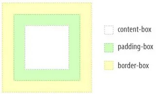

background
background: color image position/size repeat origin clip attachment;
background: url("../image/examples-burger-svg.svg") no-repeat 0 0 / cover;
background-position
background-position: 50px 100px;
background-position: 50% 25%;
background-position: right bottom;
background-position: right 30px bottom 60px;
background-size
contain -- расширяется во все стороны пока не упрётся в край блока с какой нибудь стороны
cover -- пропорции изображения сохраняются;
background-repeat: repeat / repeat-x / repeat-y / no-repeat / round / space
round -- повторяющиеся картинки по краям блока обрезаться не будут
space -- Режим повторения фона space похож на round, при чём части картинки тоже не обрезаются.
Отличие в том, что повторяющиеся фоновые картинки не сжимаются или растягиваются, а для
компенсации ширины блока между ними добавляется пустое пространство.
background-attachment: scroll(default) / fixed
фон не прокручивается, зафиксирован на одном месте.
background-origin - расположение и размеры области отображения фонового изображения
background-clip - управляет тем, как обрезается фон

фон инлайново в html
<a href="#" class="abc" style="background-image: url(img/abc.png)">
.abc {
...
}
ссылка строчный элемент и что бы фон работал
нужно сделать ее блочной или элементом flex/grid
размножить рисунок на весь фон
linear-gradient( ... );
background-size: 50px 50px;
background-repeat: repeat;
множественные фоны
пути к изображениям background перечисляются через запятую
img {
background-color: #ffffff;
background-image: url("img/glasses.svg"), url("img/keks.jpg");
background-position: 75px 125px, center;
background-clip: padding-box;
background-origin: border-box;
background-size: 150px, cover; размер первой будет 150px а второй cover
background-repeat: no-repeat;
}
Значения других свойств изображений тоже задаются через запятую.
Порядок значений должен соответствовать порядку фоновых картинок.
image-set -- несколько фоновых изображений
element {
background-image: image-set(
small-image.png 1x,
medium-image.png 2x,
large-image.png 3x
);
}